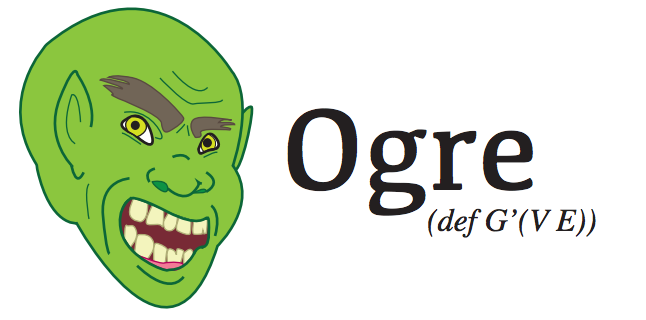

WARNING OgreDocs is still being written.
Introduction
Ogre is a domain specific language for traversing property graphs in Clojure. Ogre wraps Gremlin, a library which enables all sorts of groovy operations on graphs.
The documentation and samples presented here attempt to stay current with the most current, stable release of Ogre. Please join the Gremlin users group for any Ogre related discussions. Please use the Ogre issue page for specifically reporting bugs and discussing features. For any errors or corrections with OgreDocs, please use the OrgeDocs issue page. This page is a fork of GremlinDocs.
Pull requests will be celebrated, scrutinized, and hopefully accepted. If the pull request is really solid, then I'll probably give you commit access to Ogre and cross my fingers.
Ogre currently powers Archimedes, a Clojure library for Blueprints, and Hermes, a Clojure library built on top of Archimedes for working with Titan. Ogre, Archimedes, and Hermes are all open source projects developed and maintained by Zack Maril.
Getting started
The Tinkerpop stack
Before going down the rabbit hole, I offer the briefest of warnings:
the Tinkerpop folks have
been working on Gremlin,
Pipes, and
Blueprints for a few
years now and the stack has become incredibly intertwined. Ogre and
Archimedes try to hide all of
this from you at some hide level, but every abstraction leaks. Your
stack traces will speak of com.tinkerpop.blueprints.Vertex and
com.tinkerpop.gremlin.GremlinPipeline, and there is nothing I can
(well, should) do about it. The Tinkerpop stack is fantastic and
really well done, but I wanted to warn you that the following is just
the tip of the iceberg in terms of what you will need to know what is
really going on when you use Ogre.
With that terribly encouraging thought, let's get started!
leiningen
The version scheme for Ogre is as follows:
[Full Gremlin version].[Ogre major version]. Philosophically, the
authors of Gremlin are the ones who will be causing most of the
changes to Ogre. Ogre is a mere wrapper around their work and the
version scheme acknowledges that directly. Thus, the first and current
release is 0.2.2.0, meaning that the current release uses Gremlin
0.2.2 and has undergone zero major versions itself so far since
release.
To get started with Ogre, include the following dependency for
leiningen: [zmaril/ogre "0.2.2.0"].
The TinkerGraph
Unless otherwise noted, all samples reference ogre.tinkergraph and ogre.core.
(require '[ogre.tinkergraph :as g])
(require '[ogre.core :as q])
(g/use-new-tinker-graph!)g/use-new-tinker-graph! creates the following graph and secretly
squirrels it away
somewhere
(image from
here):

I recommend that you open this image up into a new tab. It will serve as the main reference for the majority of the examples below.
So what does Ogre actually do?
At a high level, Ogre let's you easily ask complex questions about certain types of graphs and get back answers. That's really all it does.
At a low level, Ogre is a library that takes in Blueprint Vertices and Edges and let's you build up GremlinPipeline objects that ask questions about those objects in the language of traversals, transformations, filters, and branching on the graph. Ogre allows you to annotate various steps of the pipeline to allow for incredibly useful queries in a few terse lines. Ogre also carefully deals with some of the side effects that the Gremlin library can perform.
At the lowest level, Ogre is probably equivalent to some crazy Turing machine. Man, I wonder if some poor grad student has ever tried to write the JVM as a Turing machine. Poor guy.
Using OgreDocs
OgreDocs is organized to be read mostly linearly. That means that you can probably read it from start to finish and understand what is going on. That means it starts from the basics, traversals, maps, conversions, and filters. Then it transitions into the more advanced topics of annotations, side effects, branching, and recipes. At the same time, it is meant to serve as a complete reference for anyone using the library (ctrl+f is your friend). These examples were are developed at the command line or inside emacs with a REPL, so they are meant to be run and experimented with.
Building queries
Ogre let's you build up Gremlin queries from scratch. The main method
for doing this is q/query. Here is a simple query on the
Tinkergraph. It takes in the vertex with id 1, finds the vertices
that the starting vertex points out to, and then returns the result in
a vector.
(require '[ogre.tinkergraph :as g])
(require '[ogre.core :as q])
(g/use-new-tinker-graph!)
(q/query (g/find-by-id 1)
q/-->
q/into-vec!)
;;[#<TinkerVertex v[2]> #<TinkerVertex v[4]> #<TinkerVertex v[3]>]Let's break this down:
q/queryis a macro that is just a combination of->and(GremlinPipeline.). It takes in a single element or a Collection and creates a new pipeline around them.g/find-by-idis a function that goes and asks the vertex for the element of id 1.q/-->is a function which adds on an outwards traversal step to the pipe. This means that the Gremlin query will take all the vertices it is currently thinking about and then look for all the vertices that the previous vertices pointed to.q/into-vec!executes the query and returns the results inside of a vector. Up until this call, the Gremlin query hasn't actually done anything yet. Only when a function that ends with a bang is passed in does anything actually happen beyond just a GremlinPipeline getting built up.
So far so good. But, I wonder, who is the dashing rogue behind
#<TinkerVertex v[2]>?
(q/query (g/find-by-id 1)
q/-->
q/into-vec!
first
((q/prop :name)))
;;"vadas"q/query isn't just about running Gremlin queries. Remember,
it's really just a glorified -> with helper functions. That means we
can stick a first in there to get the first vertex of the vector.
(q/prop :name) takes a property key and returns a function which
takes a vertex and returns the given property. Thus, "vadas" is the
charming face of #<TinkerVertex v[2]>.
Traversal
Traversal functions allow you to explore around the graph and see how vertices are connected.
out / -->
--> or out gets the out adjacent vertices (the functions do
exactly the same thing, one just looks cooler). Additionally, labels
can be supplied that makes the graph only traverse edges with those
labels. This also applies to the other traversal functions where it
makes sense (any function that is named with arrows).
(q/query (g/find-by-id 4)
q/-->
q/into-vec!)
;;[#<TinkerVertex v[5]> #<TinkerVertex v[3]>]
(q/query (g/find-by-id 4)
q/out
q/into-vec!)
;;[#<TinkerVertex v[5]> #<TinkerVertex v[3]>]
(q/query (g/find-by-id 4)
(q/--> :created)
q/into-vec!)
;;[#<TinkerVertex v[5]> #<TinkerVertex v[3]>]
(q/query (g/find-by-id 4)
(q/--> :hates)
q/into-vec!)
;;[]
(q/query (g/find-by-id 4)
(q/--> :created :hates)
q/into-vec!)
;;[#<TinkerVertex v[5]> #<TinkerVertex v[3]>]out-edges / --E>
Gets the outgoing edges of the vertex.
(q/query (g/find-by-id 4)
q/--E>
q/into-vec!)
;;[#<TinkerEdge e[10][4-created->5]> #<TinkerEdge e[11][4-created->3]>]
(q/query (g/find-by-id 4)
q/out-edges
q/into-vec!)
;;[#<TinkerEdge e[10][4-created->5]> #<TinkerEdge e[11][4-created->3]>]out-vertex
Get the outgoing tail vertex of the edge.
(q/query (g/find-by-id 4)
q/--E>
q/out-vertex
q/into-vec!)
;;[#<TinkerVertex v[4]> #<TinkerVertex v[4]>]Conceptually, this might seem same strange at first. Why does it
return the same vertex twice? The answer lies in the example queries
for --E>. Those queries return two edges. The current query is the
same as the --E> query except we are asking for the out-vertex.
That means, by the time we are asking for the out-vertex, we have
two objects "in the pipeline". Thus, we get two objects back.
in / <--
Gets the adjacent vertices to the vertex.
(q/query (g/find-by-id 3)
q/<--
q/into-vec!)
;;[#<TinkerVertex v[1]> #<TinkerVertex v[4]> #<TinkerVertex v[6]>]in-edges / <E--
Gets the incoming edges of the vertex.
(q/query (g/find-by-id 3)
q/<E--
q/into-vec!)
;;[#<TinkerEdge e[9][1-created->3]>
;; #<TinkerEdge e[11][4-created->3]>
;; #<TinkerEdge e[12][6-created->3]>]in-vertex
Get incoming head vertex of the edge.
(q/query (g/find-by-id 3)
q/<E--
q/in-vertex
q/into-vec!)
;;[#<TinkerVertex v[3]> #<TinkerVertex v[3]> #<TinkerVertex v[3]>]both / <->
Get both adjacent vertices of the vertex, the in and the out.
(q/query (g/find-by-id 4)
q/<->
q/into-vec!)
;;[#<TinkerVertex v[1]> #<TinkerVertex v[5]> #<TinkerVertex v[3]>]both-edges / <E>
Get both incoming and outgoing edges of the vertex.
(q/query (g/find-by-id 4)
q/<E>
q/into-vec!)
;;[#<TinkerEdge e[8][1-knows->4]>
;; #<TinkerEdge e[10][4-created->5]>
;; #<TinkerEdge e[11][4-created->3]>]both-vertices
Get both incoming and outgoing vertices of the edge.
(q/query (g/find-by-id 4)
q/<E>
q/both-vertices
q/into-vec!)
;;[#<TinkerVertex v[1]> #<TinkerVertex v[4]>
;; #<TinkerVertex v[4]> #<TinkerVertex v[5]>
;; #<TinkerVertex v[4]> #<TinkerVertex v[3]>]Map
The following functions are conceptually similar in scope to
clojure.core/map and so are grouped together. They all take in a
function and perform some transformation on it.
id
Gets the unique identifier of the element.
(q/query (g/find-by-id 1)
q/id
q/into-vec!)
;;["1"]
(q/query (g/find-by-id 1)
q/-->
q/id
q/into-vec!)
;;["2" "4" "3"]
(q/query (g/find-by-id 1)
q/id
q/-->
q/into-vec!)
;;ClassCastException java.lang.String cannot be cast to com.tinkerpop.blueprints.Vertex
;;com.tinkerpop.gremlin.pipes.transform.VerticesVerticesPipe.processNextStart
;;(VerticesVerticesPipe.java:37)property
Get the property value of an element.
(q/query (g/find-by-id 1)
(q/property :name)
q/into-vec!)
;;["marko"]
(q/query (g/find-by-id 1)
q/-->
(q/property :name)
q/into-vec!)
;;["vadas" "josh" "lop"]label
Gets the label of an edge.
(q/query (g/find-by-id 1)
(q/property :name)
q/into-vec!)
;;["marko"]
(q/query (g/find-by-id 1)
q/-->
(q/property :name)
q/into-vec!)
;;["vadas" "josh" "lop"]map
Gets the property map of the graph element.
(q/query (g/find-by-id 1)
q/map
q/into-vec!)
;;[#<HashMap {name=marko, age=29}>]
(q/query (g/find-by-id 1)
q/map
q/first-into-map!)
;;{:name "marko", :age 29}
(q/query (g/find-by-id 1)
q/-->
q/map
q/all-into-maps!)
;;({:name "vadas", :age 27} {:name "josh", :age 32} {:name "lop", :lang "java"})We now see two new functions in addition to q/map: first-into-map!
and all-into-maps!. As you see, Gremlin doesn't return Clojure data
structures. The new functions execute the Gremlin query and then call
the correct conversion methods to ensure that you can work with the
returned objects without too much hassle.
path
Gets the path through the pipeline up to this point. If functions are provided, they are applied round robin to each of the objects in the path.
(q/query (g/find-by-id 1)
q/<->
q/<->
q/path
q/all-into-vecs!)
;; ([#<TinkerVertex v[1]> #<TinkerVertex v[2]> #<TinkerVertex v[1]>]
;; [#<TinkerVertex v[1]> #<TinkerVertex v[4]> #<TinkerVertex v[1]>]
;; [#<TinkerVertex v[1]> #<TinkerVertex v[4]> #<TinkerVertex v[5]>]
;; [#<TinkerVertex v[1]> #<TinkerVertex v[4]> #<TinkerVertex v[3]>]
;; [#<TinkerVertex v[1]> #<TinkerVertex v[3]> #<TinkerVertex v[1]>]
;; [#<TinkerVertex v[1]> #<TinkerVertex v[3]> #<TinkerVertex v[4]>]
;; [#<TinkerVertex v[1]> #<TinkerVertex v[3]> #<TinkerVertex v[6]>])
(q/query (g/find-by-id 1)
q/<->
q/<->
(q/path (q/prop :name))
q/all-into-vecs!)
;;(["marko" "vadas" "marko"]
;; ["marko" "josh" "marko"]
;; ["marko" "josh" "ripple"]
;; ["marko" "josh" "lop"]
;; ["marko" "lop" "marko"]
;; ["marko" "lop" "josh"]
;; ["marko" "lop" "peter"])
(q/query (g/find-by-id 1)
q/<->
q/<->
(q/path (q/prop :name) (fn [v] (count (.getProperty v "name"))))
q/all-into-vecs!)
;;(["marko" 5 "marko"]
;; ["marko" 4 "marko"]
;; ["marko" 4 "ripple"]
;; ["marko" 4 "lop"]
;; ["marko" 3 "marko"]
;; ["marko" 3 "josh"]
;; ["marko" 3 "peter"])Note that again we have introduced a new function all-into-vecs!.
This function takes in an ArrayList of ArrayLists and produces a list
of vectors.
transform
Transform applies a function to each object.
(q/query (g/find-by-id 1)
(q/transform (q/prop :name))
q/first-of!)
;;"marko"
(q/query (g/find-by-id 1)
q/--E>
q/label
(q/transform count)
q/into-vec!)
;;[5 5 7]first-of! executes the query and gets the first element from the
list. Don't shoot yourself in the foot.
Executors
Ogre cannot do everything for you. Specifically, it does not figure out the sorts of Java objects that are returned from some arbitrary query and convert them automatically into Clojure objects. So, with that in mind, Ogre includes several functions that execute the pipeline and then do conversions into Clojure data structures.
to-list!
This is the Grand Daddy of all Executors. It calls .toList on the
Gremlin pipeline and gets back the list of Java objects. You probably
don't want to use this directly.
(q/query (g/find-by-id 1)
q/-->
q/to-list!)
;;#<ArrayList [v[2], v[4], v[3]]>into-vec!
Gets the objects and sticks them inside of a vector.
(q/query (g/find-by-id 1)
q/-->
q/into-vec!)
;;[#<TinkerVertex v[2]> #<TinkerVertex v[4]> #<TinkerVertex v[3]>]into-set!
Gets the objects and sticks them inside of a set.
(q/query (g/find-by-id 1)
q/-->
q/into-set!)
;;#{#<TinkerVertex v[2]> #<TinkerVertex v[3]> #<TinkerVertex v[4]>}first-of!
Gets the first object of the returned list.
(q/query (g/find-by-id 1)
q/first-of!)
;;#<TinkerVertex v[1]>first-into-vec!
Gets the first object of the returned list and puts it into a vector.
(q/query (g/find-by-id 1)
(q/property :name)
q/path
q/into-vec!)
;;[#<ArrayList [v[1], marko]>]
(q/query (g/find-by-id 1)
(q/property :name)
q/path
q/first-into-vec!)
;;[#<TinkerVertex v[1]> "marko"]first-into-set!
Gets the first object of the returned list and puts it into a set.
(q/query (g/find-by-id 1)
q/-->
q/id
q/gather
q/first-into-set!)
;;#{"2" "3" "4"}first-into-map!
Gets the first object of the returned list and puts it into a set.
(q/query (g/find-by-id 1)
q/map
q/first-into-map)
;;{:name "marko", :age 29}all-into-vecs!
Gets the list of returned objects and maps vec across all of the objects.
(q/query (g/find-by-id 1)
q/-->
(q/path (q/prop :age)
(q/prop :name))
q/all-into-vecs!)
;;([29 "vadas"] [29 "josh"] [29 "lop"])all-into-sets!
Gets the list of returned objects and maps set across all of the objects.
(q/query (g/find-by-id 1)
q/-->
(q/path (q/prop :age)
(q/prop :name))
q/all-into-sets!)
;;(#{"vadas" 29} #{"josh" 29} #{"lop" 29})all-into-maps!
Gets the list of returned objects and maps set across all of the objects.
(q/query (g/find-by-id 1)
q/<->
q/<->
q/map
q/all-into-maps!)
;; ({:name "marko", :age 29}
;; {:name "marko", :age 29}
;; {:name "ripple", :lang "java"}
;; {:name "lop", :lang "java"}
;; {:name "marko", :age 29}
;; {:name "josh", :age 32}
;; {:name "peter", :age 35})Reduce
These functions sort of act like clojure.core/reduce.
order
Order the items in the stream according to the provided function. If no function is provided, then a default sort order is used.
(q/query (g/get-vertices)
(q/property :name)
q/into-vec!)
;;["lop" "vadas" "marko" "peter" "ripple" "josh"]
(q/query (g/get-vertices)
(q/property :name)
q/order
q/into-vec!)
;;["josh" "lop" "marko" "peter" "ripple" "vadas"]
(q/query (g/get-vertices)
(q/property :name)
(q/order (fn [a b] (compare b a)))
q/into-vec!)
["vadas" "ripple" "peter" "marko" "lop" "josh"]gather
Collect all objects up to that step and process the gathered list with the provided closure.
(q/query (g/find-by-id 1)
q/-->
q/id
q/gather
q/first-into-vec!)
;;["2" "3" "4"]
(q/query (g/find-by-id 1)
q/-->
q/id
(q/gather count)
q/into-vec!)
;;3Filter
Filter steps decide whether to allow an object to pass to the next step or not.
range
A range filter that emits the objects within a range.
(q/query (g/find-by-id 1)
(q/-->)
(q/into-vec!))
;;[#<TinkerVertex v[2]> #<TinkerVertex v[4]> #<TinkerVertex v[3]>]
(q/query (g/find-by-id 1)
(q/-->)
(q/range 0 1)
(q/into-vec!))
;;[#<TinkerVertex v[2]> #<TinkerVertex v[4]>]dedup
Filter out repeated objects. A function can be supplied that provides the values that the pipeline will consider when filtering
(q/query (g/get-vertices)
q/<->
(q/property :name)
(q/into-vec!))
;;["marko" "josh" "peter" "marko" "vadas" "josh" "lop" "lop" "josh" "marko" "ripple" "lop"]
(q/query (g/get-vertices)
q/<->
q/dedup
(q/property :name)
(q/into-vec!))
;;["marko" "josh" "peter" "vadas" "lop" "ripple"]
(q/query (g/get-vertices)
q/<->
(q/dedup (partial g/get-property :lang))
(q/property :name)
(q/into-vec!))
;;["marko" "lop"]g/get-vertices retrieves all of the vertices of the graph and
provides them in a list.
except
Filter out the provided objects.
(q/query (g/find-by-id 1)
q/-->
q/<--
(q/except [(g/find-by-id 1)])
(q/into-vec!))
;;[#<TinkerVertex v[4]> #<TinkerVertex v[6]>]filter
Decide whether to allow an object to pass. Return true from the closure to allow an object to pass.
(q/query (g/get-vertices)
(q/filter (fn [v] (= "java" (.getProperty v "lang"))))
q/map
(q/all-into-maps!))
;;({:name "lop", :lang "java"} {:name "ripple", :lang "java"})has
Allows an element if it has a particular property. The standard
Clojure operations for comparisons can also be supplied:
>,>=,<,<=,=,not=.
(q/query (g/get-vertices)
(q/has :name "marko")
(q/into-vec!))
;;[#<TinkerVertex v[1]>]
(q/query (g/get-vertices)
(q/has :age > (int 30))
(q/into-vec!))
[#<TinkerVertex v[6]> #<TinkerVertex v[4]>]has-not
Allows an element if it does not have a particular property.
(q/query (g/get-vertices)
(q/has-not :name "marko")
(q/into-vec!))
;;[#<TinkerVertex v[3]> #<TinkerVertex v[2]>
;; #<TinkerVertex v[6]> #<TinkerVertex v[5]>
;; #<TinkerVertex v[4]>]
(q/query (g/get-vertices)
(q/has-not :age > (int 30))
(q/into-vec!))
;;[#<TinkerVertex v[2]> #<TinkerVertex v[1]>]interval
Allow elements to pass that have their property in the provided start and end interval.
(q/query (g/find-by-id 1)
(q/--E>)
(q/interval :weight 0 0.6)
(q/in-vertex)
(q/into-vec!))
;;[#<TinkerVertex v[2]> #<TinkerVertex v[3]>]random
Emits the incoming objects, each with the supplied chance.
;; Results will vary
(q/query (g/get-vertices)
(q/random 0.5)
(q/into-vec!))
[#<TinkerVertex v[6]> #<TinkerVertex v[4]>]
(q/query (g/get-vertices)
(q/random 0.5)
(q/into-vec!))
;; Results will vary
[#<TinkerVertex v[3]> #<TinkerVertex v[1]> #<TinkerVertex v[6]> #<TinkerVertex v[4]>]retain
Allow everything to pass except what is not in the supplied collection.
(q/query (g/find-by-id 1)
(q/-->)
(q/retain [(g/find-by-id 2)])
(q/into-vec!))
;;[#<TinkerVertex v[2]>]Annotations
So far, we've had great success traversing the graph. If you've understood most of everything up to this point, you know how to do sorts of neat things with graphs. There's another level of traversal that we can attain though. We can annotate and traverse the pipeline itself, which lets us do all sorts of fancy tricks.
back
Go back to the results from n-steps ago.
(q/query (g/find-by-id 1)
q/-->
(q/back 1)
q/into-vec!)
;;[#<TinkerVertex v[1]>]as/back-to
as lets you name a step that you can later return to with back-to.
(q/query (g/find-by-id 1)
(q/as "here")
q/-->
(q/back-to "here")
q/into-vec!)
;;[#<TinkerVertex v[1]>]select
Get a list of named steps, with optional functions for post processing round robin style. (This will be returned as a map when Pipes is upgraded to 2.3.0).
(q/query (g/find-by-id 1)
(q/as "a")
(q/--> :knows)
(q/as "b")
q/select
q/all-into-vecs!)
;;([#<TinkerVertex v[1]> #<TinkerVertex v[2]>]
;; [#<TinkerVertex v[1]> #<TinkerVertex v[4]>])
(q/query (g/find-by-id 1)
(q/as "a")
(q/--> :knows)
(q/as "b")
(q/select (q/prop :name))
q/all-into-vecs!)
;;(["marko" "vadas"] ["marko" "josh"])
(q/query (g/find-by-id 1)
(q/as "a")
(q/--> :knows)
(q/as "b")
(q/select (q/prop :name) g/get-id)
q/all-into-vecs!)
;;(["marko" "2"] ["marko" "4"])select-only
Select the named steps to emit, with round robin style function processing again.
(q/query (g/find-by-id 1)
(q/as "a")
q/-->
(q/as "b")
q/-->
(q/as "c")
(q/select-only ["a" "b"])
q/all-into-vecs!)
;;([#<TinkerVertex v[1]> #<TinkerVertex v[4]>]
;; [#<TinkerVertex v[1]> #<TinkerVertex v[4]>])
(q/query (g/find-by-id 1)
(q/as "a")
q/-->
(q/as "b")
q/-->
(q/as "c")
(q/select-only ["a" "c"] (q/prop :name))
q/all-into-vecs!)
;;(["marko" "ripple"] ["marko" "lop"])
(q/query (g/find-by-id 1)
(q/as "a")
(q/--> :knows)
(q/as "b")
q/-->
(q/as "c")
(q/select-only ["a" "c"] (q/prop :name) g/get-id)
q/all-into-vecs!)
;;(["marko" "5"] ["marko" "3"])loop
Loop over a particular set of steps in the pipeline. The first argument is the number of steps back. The second argument is a predicate that takes three objects: the current object, the current path, and the number of loops thus far. While the predicate evaluates true, the loop continues on it's merry way.
(q/query (g/find-by-id 1)
(q/-->)
(q/loop 1
(fn [l o p] (< l 3)))
(q/property :name)
(q/into-vec!))
;;["ripple" "lop"]loop-to
loop-to is just like loop, but it travels back to a named step
instead.
(q/query (g/find-by-id 1)
(q/as "here")
(q/-->)
(q/loop-to "here"
(fn [l o p] (< l 3)))
(q/property :name)
(q/into-vec!))
;;["ripple" "lop"]Side Effect
As this stage in Ogre's development, side effect steps immediately return various data structures about the query.
get-grouped-by
Takes in a key function and processing function. Returns all of the processed objects grouped by the value of the key function.
(q/query (g/get-vertices)
(q/get-grouped-by! (q/prop :lang)
identity))
;;{nil [#<TinkerVertex v[2]> #<TinkerVertex v[1]>
;; #<TinkerVertex v[6]> #<TinkerVertex v[4]>],
;;"java" [#<TinkerVertex v[3]> #<TinkerVertex v[5]>]}
(q/query (g/get-vertices)
(q/get-grouped-by! (q/prop :lang)
(q/prop :name)))
;;{nil ["vadas" "marko" "peter" "josh"], "java" ["lop" "ripple"]}get-group-count
Emits input, but updates a map for each input, where closures provides generic map update.
get-table
Emits input, but stores row of as values (constrained by column names if provided) in a table. Accepts an optional set of closures that are applied in round-robin fashion to each column of the table.
get-tree
Emit input, but stores the tree formed by the traversal as a map. Accepts an optional set of closures to be applied in round-robin fashion over each level of the tree.
side-effect
Emits input, but calls a side effect closure on each input.
Branch
Branch steps decide which step to take.
copy-split
Copies incoming object to internal pipes.
exhaust-merge
Used in combination with a copySplit, merging the parallel
traversals by exhaustively getting the objects of the first, then the
second, etc.
fair-merge
Used in combination with a copySplit, merging the parallel
traversals in a round-robin fashion.
if-then-else
Allows for if-then-else conditional logic.
memoize
Remembers a particular mapping from input to output. Long or expensive expressions with no side effects can use this step to remember a mapping, which helps reduce load when previously processed objects are passed into it.
For situations where memoization may consume large amounts of RAM, consider using an embedded key-value store like JDBM or some other persistent Map implementation.
Recipes
Recipes are common patterns that are seen in using Gremlin.
Duplicate Edges
Strictly speaking, you cannot have duplicated egdes with the same id.
This example finds edges with same outV/inV/label properties.
Paging Results
It is sometimes desireable to not return an entire results set. Results can be paged or limited as follows:
Paths Between Two Vertices
First, paths for a directed graph:
Then, undirected:
Use the value of it.loops<=3to control the depth of the traversal:
Reading From a File
Reading data from an edge file formatted as CSV is easy to do with Gremlin.
Sampling
It is sometimes useful to grab a random sample of the items in a collection. That can be done to some degree with the random step, but getting an explicit number of items is not supported using that step.
Shortest Path
Find the shortest path between two vertices: